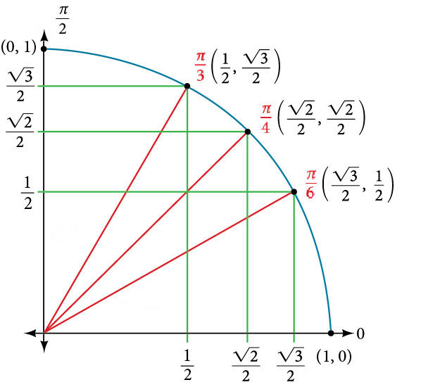
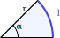
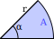

Trigonométrie : Objets d'Apprentissage
Table of Contents
1. Angles
- comprendre un angle comme un point sur le cercle trigonométrique
- comprendre les radians comme la désignation d'un angle par la longueur d'arc correspondante
- savoir convertir les degrés en radians et vice versa
- connaître la position de certains angles clés sur le cercle trigonométrique
- en particulier : \(0\), \(\dfrac{\pi}{6}\), \(\dfrac{\pi}{4}\), \(\dfrac{\pi}{3}\), \(\dfrac{\pi}{2}\) et \(\pi\)
- en particulier : \(0\), \(\dfrac{\pi}{6}\), \(\dfrac{\pi}{4}\), \(\dfrac{\pi}{3}\), \(\dfrac{\pi}{2}\) et \(\pi\)
- savoir positionner un angle sur le cercle trigonométrique en se référant aux angles clés
2. Fonctions trigonométriques
- comprendre la définition géométrique des fonctions trigonométriques
- \(\cos(\alpha)\) et \(\sin(\alpha)\) comme les coordonnées du point correspondant sur le cercle trigonométrique
- \(\tan(\alpha)\) comme mesurée sur l'axe tangente au cercle trigonométrique
- \(\cos(\alpha)\) et \(\sin(\alpha)\) comme les coordonnées du point correspondant sur le cercle trigonométrique
- connaître / comprendre les relations suivantes
\[\cos^2(\alpha) + \sin^2(\alpha) = 1 \quad \tan(\alpha) = \dfrac{\sin(\alpha)}{\cos(\alpha)}\] - connaître / comprendre la valeur des fonctions trigonométriques pour les angles clés:
{kind=link}

| Angle | cos | sin | tan |
|---|---|---|---|
| 0 | \(1\) | \(0\) | \(0\) |
| π/6 | \(\dfrac{\sqrt{3}}{2}\) | \(\dfrac{1}{2}\) | \(\dfrac{\sqrt{3}}{3}\) |
| π/4 | \(\dfrac{\sqrt{2}}{2}\) | \(\dfrac{\sqrt{2}}{2}\) | \(1\) |
| π/3 | \(\dfrac{1}{2}\) | \(\dfrac{\sqrt{3}}{2}\) | \(\sqrt{3}\) |
| π/2 | \(0\) | \(1\) | n/a |
- savoir trouver la valeur des fonctions trigonométriques d'un angle en se référant aux angles clés et en exploitant les symétries du cercle trigonométrique
- savoir identifier les angles qui ont un \(\cos\), \(\sin\) ou \(\tan\) donné en se référant au cercle trigonométrique
3. Arcs de cercle et secteurs circulaires
- connaître et comprendre la formule pour une longueur d'arc en fonction du rayon et de l'angle:
\[\boxed{l=\alpha \cdot r}\]

- connaître / comprendre la formule pour l'aire d'un secteur circulaire en fonction du rayon et de l'angle:
\[\boxed{A=\frac{1}{2}\alpha \cdot r^2}\]

- savoir utiliser ces formules pour formules pour trouver des angles / longueurs d'arcs / aires manquantes